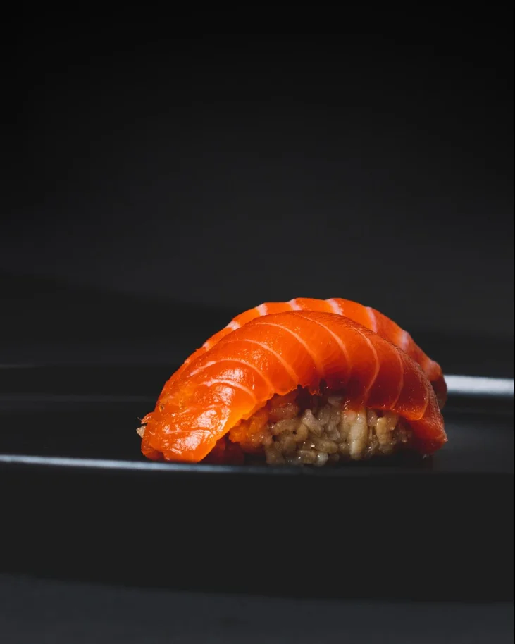
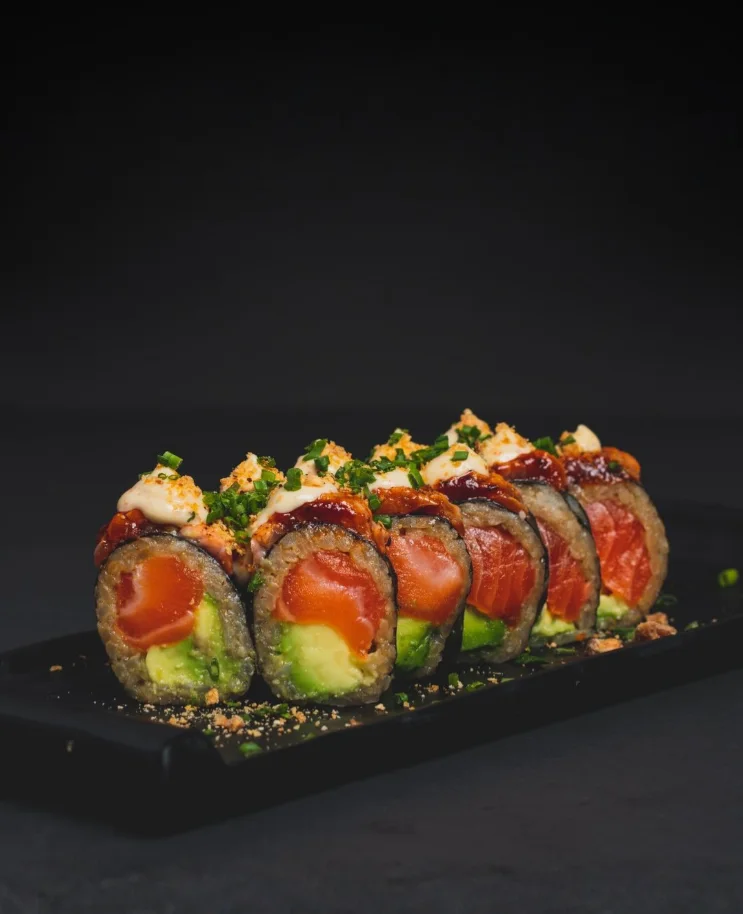
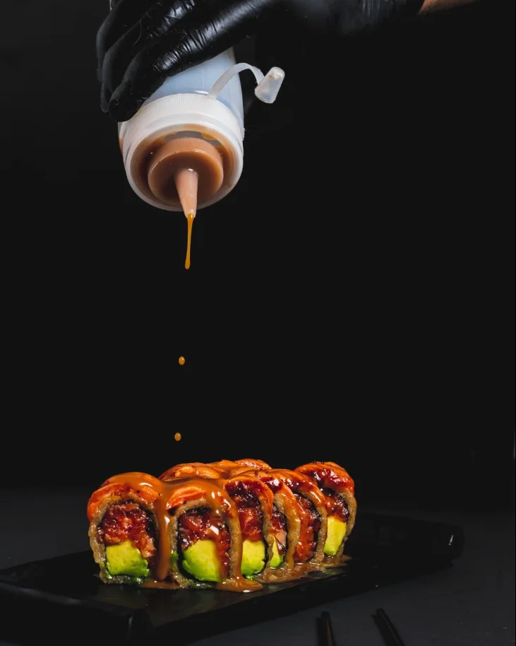
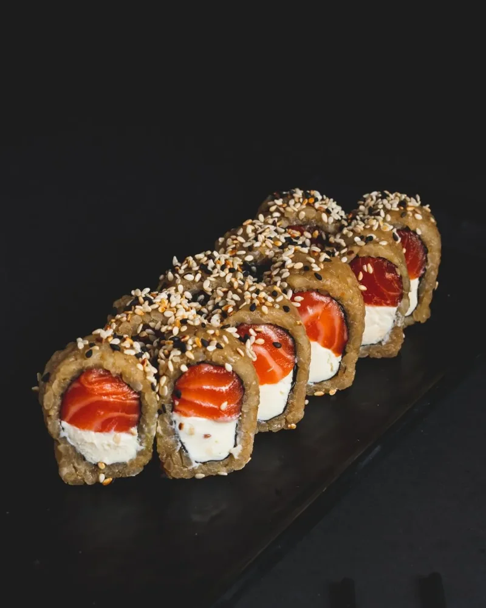

Fotografía y video
Las jornadas en la cocina y en la barra, con equipo profesional y la dirección de arte de Umarê.
Umarê Omakase sigue creciendo con el delivery. Umarê en Galo abre la barra de sushi de noche en Palermo Hollywood. Cada una lleva su propio plan, y en las dos la calidad es lo que no se negocia.

Arrancó como un proyecto propio y armó una clientela que vuelve. Hay días que la cocina se agota solo con historias.
Es la diferencia con el sushi de cadena, y la que justifica el precio. El contenido y los anuncios tienen que mostrarla.
El delivery de lunes a lunes, y la barra que se arma cada noche dentro de Galo, en Humboldt 1925.
La marca de siempre: sushi fusión y tradicional japonés, de lunes a lunes, con la clientela que ya la conoce.
De día es Galo Coffee Roasters. A la noche, el café se convierte en barra de sushi, todos los días.
Relevamos los anuncios activos de sushi en Palermo y Belgrano en Meta, y lo que aparece en Google. El rubro se parte en dos: los que compiten con descuentos y los que venden la experiencia.
2x1 en Combinado SushiClub 15 piezas
30% OFF en toda la carta
20% de ahorro todos los días
Biblioteca de anuncios de Meta, anuncios activos al 26 de octubre de 2026.
Omakase es confiar.
Vení a vivir un omakase de verdad.
Delivery real, no delivery genérico.
Mismo relevamiento. Es el lado donde juega Umarê.
El que hoy busca omakase en Palermo encuentra primero a un vecino de Galo que paga por aparecer. Ese lugar es el que va a ir a buscar Umarê.
Lo dijeron claro: el producto es importado y la diferencia tiene que verse. Eso define cómo producimos el contenido y cómo armamos los anuncios, en las dos cuentas.
Foto y video propios, con la misma dirección de arte que ya tiene la marca. La pieza es la protagonista, sin nada que la tape.
De dónde viene cada producto, cómo se corta y cómo se arma. Lo que el cliente no ve cuando pide, contado para que lo valore.
Los anuncios venden la experiencia y el producto, no la promoción. La vara que tiene hoy la cuenta se mantiene en cada pieza que sale.



Muchas sucursales, los mismos combos en todas y promociones todo el año. Compite por precio y por estar cerca.
Producto importado, una cocina propia y ahora una barra. Es un argumento que una cadena no puede usar, y es el que va al frente de cada publicación y de cada anuncio.
Las historias ya venden: la clientela está. Lo que sumamos es gente nueva de la zona de reparto que todavía no los conoce, y una cuenta que acompañe todos los días, no solo cuando sube una historia.
Historias que en algunos días agotan la cocina, sesiones de fotos y una estética ya definida. Desde enero, sin publicidad.
Una jornada de producción por mes, la cuenta gestionada con calendario y campañas que llevan pedidos todos los días a la zona donde reparten.
Según Meta, la mayoría decide dónde comer menos de una hora antes. El anuncio tiene que aparecer a las ocho de la noche, no a las once de la mañana.
Hay que contarle al barrio que el café se convierte en barra de sushi cada noche, y que reservar esté a un toque. Galo ya tiene una comunidad en el local: es el primer público.
El Instagram del spot andando y la ficha de Google como "Próximamente", para que el barrio lo encuentre antes de la primera noche.
Los primeros invitados salen de la clientela del delivery y de la comunidad de Galo, que ya conocen las dos marcas.
Meta y Google llevan a reservar por WhatsApp o desde la landing del spot.
Grupos, reuniones y after office, y el cliente de Galo que de día ya está en el local.
No son dos canales para hacer lo mismo. Cada uno trabaja en un momento distinto de la decisión de salir a cenar, y la landing y el contenido son lo que hace rendir a los dos.
Le muestra el spot a quien vive, trabaja o sale en Palermo y no sabe que existe.
Aparece cuando alguien busca dónde comer sushi u omakase, en el buscador y en Maps.
La carta, las fotos, la ubicación y los horarios, todo en una página rápida.
La reserva se cierra en un toque y queda registrado de qué campaña vino.
Una muestra de lo que sale de la producción. Son ángulos distintos a propósito: hacen crecer la cuenta y son lo que hoy necesita Meta para encontrar gente nueva con los anuncios.
El café que se apaga y la barra que se prende, en un solo plano acelerado. La pieza que presenta el spot.
El corte, el armado y la primera pieza servida, con el sonido real del cuchillo y sin música encima.
El producto importado y su origen, pieza por pieza. Lo que justifica el precio, contado sin hablar de precio.
De la cocina de Belgrano a la caja que llega a casa. La calidad no se queda en el local.
Un nigiri o un roll distinto cada semana, para el cliente fiel que hoy ya pide por historias.
La barra armada para un after office o una cena de equipo. Es el anuncio para reuniones y grupos.
No lo hace una sola persona. Cada pieza tiene a alguien que se dedica solo a eso, y todo responde a una misma estrategia.
Las jornadas en la cocina y en la barra, con equipo profesional y la dirección de arte de Umarê.
Reels, fotos y piezas gráficas listas para el feed, las historias y los anuncios.
Calendario, publicación, historias y textos con la voz de la marca, aprobados por ustedes.
Campañas de pedidos y de reservas: armado, seguimiento y ajuste. Se corta lo que no rinde y se refuerza lo que sí.
Búsquedas, Maps y la ficha del spot, con control de en qué se va cada peso.
La landing del spot: rápida, con la identidad de Umarê y la medición instalada.
Un reporte claro de qué se invirtió, qué entró y qué decidimos. Un portal propio para ver los números cuando quieran. Una reunión de revisión para definir juntos el rumbo, y WhatsApp abierto en el medio.
Alimentos · pedidos online y por WhatsApp
Comida congelada con pedidos por la tienda y por WhatsApp. Gestionamos Meta y Google juntos y en septiembre el retorno combinado de las dos plataformas fue de 10,8 veces lo invertido.
Marca nueva · desde cero
Arrancó sin historial y sin audiencia, como va a arrancar el spot en Galo. En su mejor semana el retorno llegó a 12,8x y en el tercer mes promedió 8x.
Cada cuenta se cotiza por separado. El fee cubre el trabajo de Dilema: lo que se invierte en Meta y en Google va aparte. Los valores están en dólares y se pueden abonar en pesos al tipo de cambio del día de pago.
Contenido, gestión del Instagram y Meta Ads a pedidos. Sin adicionales por jornada ni por viáticos.
Lanzamiento y gestión del Instagram nuevo, Meta Ads a reservas y Google Ads. Sin adicionales por jornada ni por viáticos.
* El valor de contenido y redes es contratándolo junto con la publicidad de esa cuenta. Contratado solo, se cotiza aparte.
Umarê Omakase y Umarê en Galo con una sola estrategia y las jornadas coordinadas con el mismo equipo.
Se paga una sola vez: no es un abono. El dominio se registra a nombre de ustedes.
Una cuenta nueva necesita tiempo para juntar seguidores, y las campañas necesitan historial de pedidos y reservas antes de sacar conclusiones. Tres meses es lo mínimo para que las dos tengan algo que mostrar.
Al cierre del tercer mes nos sentamos con los números a la vista y definimos juntos cómo sigue.
Se le paga directo a Meta y a Google y queda a nombre de ustedes. No tiramos un número ahora porque sería adivinar.
Lo calculamos juntos a partir del ticket promedio, el margen y cuántos pedidos y reservas quieren sumar por semana, para cada cuenta por separado.
Nos dan el visto bueno y nos pasan los accesos de Instagram, Facebook y la cuenta publicitaria de Umarê.
Hacemos la primera jornada de producción y retomamos la publicidad del delivery. En paralelo armamos el Instagram y la ficha de Google del spot.
Con la fecha de apertura de Galo definida, salen las campañas de reservas para que el spot arranque con gente.